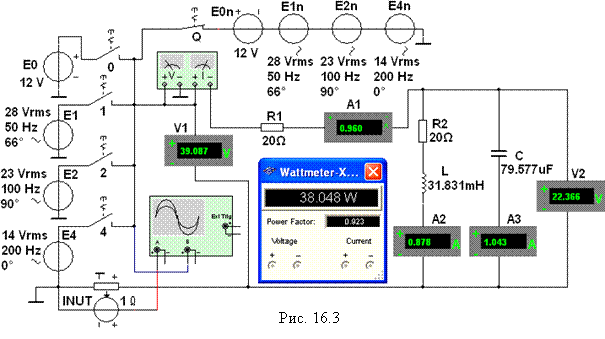

Задание 2. Запустить лабораторный комплекс Labworks и программную среду МS10 (щёлкнув мышью на команде
Эксперимент меню комплекса
Labworks). Открыть файл 16.3.ms10, размещённый в папке Circuit Design Suitе 10.1, или собрать схему (рис. 16.3) для исследования линейной электрической цепи с периодической
несинусоидальной ЭДС на её входе.
В схему (рис. 16.3) включены идеальные источники
синусоидального напряжения Е0, Е1, Е2
и Е4 с ключами 0, 1,
2 и 4 для раздельного подключения к цепи и последовательно соединённые
четыре источника Е0n, Е1n, Е2n и Е4n с ключом Q,
имитирующие гармоники несинусоидальной периодической ЭДС е(t); ваттметр XWM1 для измерения активной мощности PkЭ и коэффициента мощности cosjk на
входе цепи; осциллограф XSC1 для наблюдения за формой и измерения мгновенных
значений периодического несинусоидального тока i1(t) (канал

А)
и напряжения u(t) = е(t) (канал В) на входе цепи.
Установить найденные в Задании
1 параметры элементов схемы и режимы работы измерительных приборов
(вольтметров V1 и V2 - режимы AC,
внутренние сопротивления 10 МОм; амперметров А1, А2 и
А3 - режимы АС,
внутренние сопротивления 10 мОм).
В качестве примера на рис. 16.3 и рис. 16.4 показаны
установленные параметров пассивных и
активных элементов схемы и осциллографа для варианта N =
36. Скопировать
схему цепи на страницу отчёта.
Запустить
программу MS10. Последовательно подключая источники напряжения Е1, Е2 и Е4 посредством нажатия на клавиши 1, 2
и 4 клавиатуры (при разомкнутом
ключе Q), снимать показания приборов
и заносить их в табл. 16.1. Угол
сдвига фаз на входе цепи определять
по формуле
j = аrc(Power Factor),
где
Power Factor = cosj - коэффициент мощности, значение которого выводится на
лицевой панели ваттметра XWM1.
Для измерения постоянных составляющих ЭДС, напряжений
и токов от действия ЭДС Е0 установить на
приборах V1, V2, А1, А2
и А3 режим
работы
DC,
запустить программу MS10, нажать
на клавишу 0 клавиатуры и занести показания приборов в табл.
16.1.
Примечание. При подключении
схемы цепи к несинусоидальной ЭДС е(t) (при
нажатии на клавишу Q клавиатуры) показания приборов точно не устанавливаются,
колеблются около установившихся значений с отклонениями ±(5…10)%. Возможно, что модели измерительных приборов
(вольтметры, амперметры и ваттметр) библиотеки MS10 не предназначены для измерения периодических
несинусоидальных электрических величин.
Рассчитать действующее значение ЭДС ЕЭ,
напряжения UСЭ и токов I1Э, I2Э, I3Э ветвей по соотношениям

где
АkЭ - измеренные постоянная и переменные составляющие соответствующей
электрической величины.
Например, измеренное действующее значение
несинусоидальной ЭДС источника для варианта N = 36
 В;
В;
напряжение
на конденсаторе С
В.
Активная мощность на входе цепи равна сумме активных мощностей
от всех гармоник несинусоидальной ЭДС, т. е.
РЭ = Р0Э + Р1Э + Р2Э + Р4Э.
Для варианта N = 36
РЭ = 3,6 + 17,5 + 10,58 + 6,86 » 38,54 Вт.
Реактивная мощность на входе цепи равна сумме реактивных мощностей от всех гармоник несинусоидальных ЭДС, кроме нулевой, т. е. при Uk = Ek
QЭ = Q1Э + Q2Э + Q4Э = =
= .
Знаки углов
сдвига фаз j1, j2 и j4 определить с помощью осциллографа.
Сравнить значения вычисленных в Задании 1 электрических величин Аkр с экспериментально полученными значениями
АkЭ.